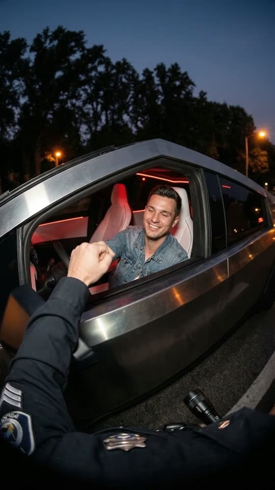
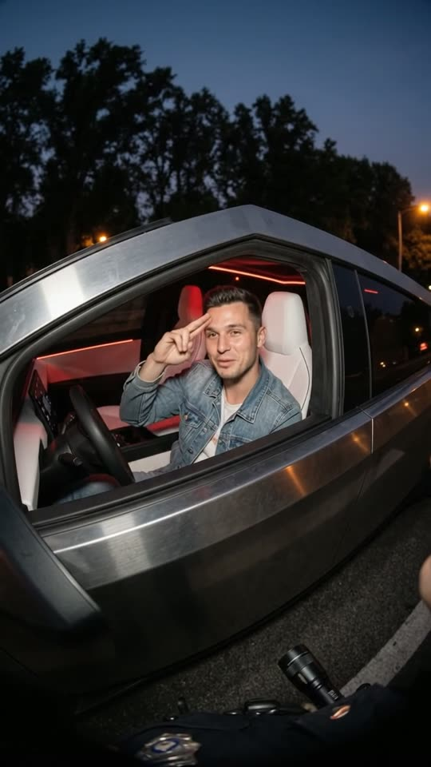
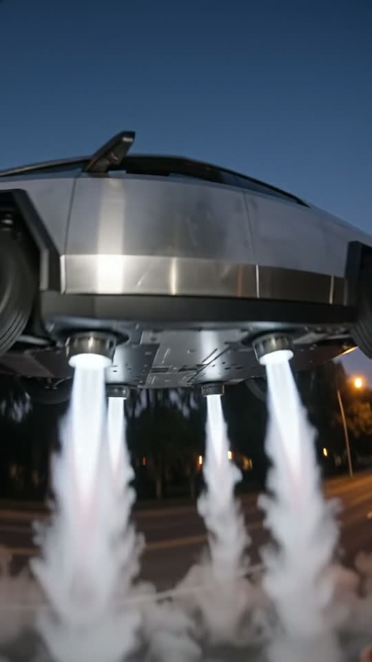
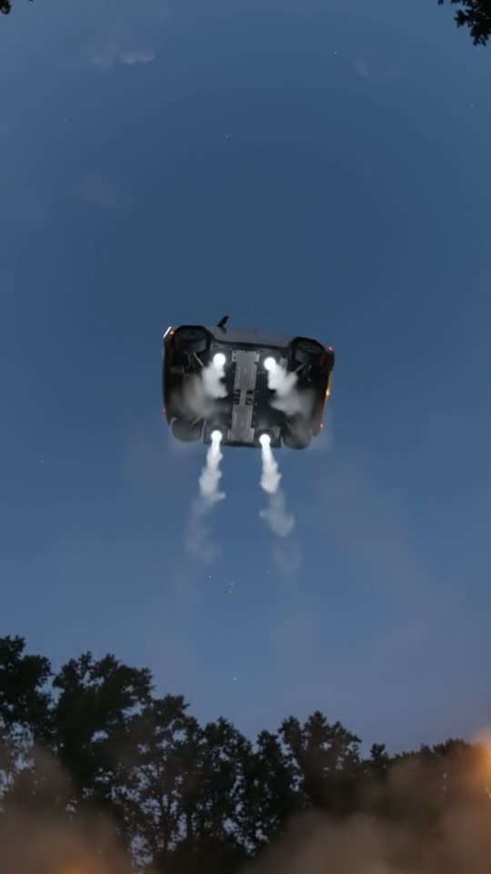

Free prompt pack
One stop.One goodbye.
A cop pulls over a silver car at dusk. The driver bumps his fist, answers every question with a grin, says goodbye and lifts straight up on four jets. One still image and one prompt, in one take.
Both prompts, in the order I ran them. Tear the ticket off each one. Tap the road to hit the lights.
The first frame
Fists already touching. This image is frame one: from the officer's chest, the open window of the silver car and the driver bumping fists with him, streetlights and trees behind.
Watch out
Ask for a normal wide view with straight lines. Describe the look of a chest camera and you get a fisheye inside a black circle.

The prompt 119 words
Real night photo from the chest height of a police officer standing beside a stopped futuristic two-seat car on a dark roadside, a natural wide view with straight lines. The car is low and angular, with brushed stainless-steel panels, white seats and red ambient light strips inside; its side window is down. Behind the wheel sits a young man of about thirty with short dark hair swept up at the front, clean-shaven, a big easy grin, a light-blue denim jacket over a white t-shirt, bumping fists through the open window with the officer, whose dark uniform sleeve reaches in from the bottom left. Orange streetlights and tall dark trees behind, a deep blue evening sky. Real photo, night noise.
Straight up
Ten seconds, four lines, four jets. Add the image as the reference, set 10 s, 9:16, 720p and audio on, and paste the prompt whole.
- 0–2.0 sthe fist bump
- 2.0–5.6 slicense, registration, ID
- 5.6–6.6 sa salute and "Goodbye."
- 6.6–10 sseen from below, it shoots up
Watch out
Say what the officer sees when he looks up: the car's belly and four jets aimed at the lens. Leave it out and the model cuts to a wide shot to show you the whole car.
Fragments



The prompt 1254 words
FORMAT Real dusk video, seen as the finished exported video file: the full picture edge to edge, nothing on top of it. Whatever records the picture is never in frame. One continuous take in real time, no cuts. Vertical frame. The video runs at 24 fps. No frame is repeated. Real time, 1x speed, never slow motion. SCENE A traffic stop at dusk seen from the chest of a police officer. A futuristic silver car is already stopped beside him with its window down. The driver, a smiling young man in a denim jacket, bumps fists with the officer, the officer asks for his papers, and the driver answers with a grin and says "Goodbye." Four thrusters under the car fire into the road, the car lifts straight up right in front of the officer, and he looks straight up at its underside as it shoots away into the sky. The two fists are already touching in the first frame. The take ends on the car's four lights high in the deep blue sky, seen from below. REFERENCE IMAGE Use it for the officer's point of view, his uniform sleeve and badge, the car, the driver, his face, his hair, his clothes, the road, the streetlights and the trees. Everything matches it exactly, zero drift, no smoothing. The action is described below. THE CAR A low, angular two-seat car with brushed stainless-steel panels, a glass roof, white seats, red ambient lights inside and a thin white light bar across its front. Hidden under its floor are four round thrusters, one near each wheel, which fire straight down. No badges, no logos, no lettering anywhere on it. THE DRIVER A young man of about thirty with short dark hair swept up at the front, clean-shaven, a big easy grin, a light-blue denim jacket over a white t-shirt; one hand on the wheel. Relaxed and friendly, completely unbothered by the stop: he grins, raises his eyebrows, drums his fingers on the wheel. He never gets out of the car. LOCATION MAP A dark two-lane road at dusk, under a deep blue evening sky, with orange streetlights and a line of dark trees beyond the shoulder. The car stands on the road shoulder; the officer stands at its driver's side window, 60 cm from the door; the window is down. The camera is at the officer's chest, facing the window, so the window and the driver fill the middle of the frame and the silver roof line runs across it at a slight angle. The officer's own right forearm in its dark uniform sleeve enters the frame from the bottom left, and the badge on his chest shows at the bottom edge. FIRST FRAME Already happening: the open side window and the driver fill x 10-75%, y 30-60%; the driver's fist touches the officer's fist in a fist bump at x 25-40%, y 45-52%; the silver roof line across the top of the car; the officer's dark sleeve and his badge along the bottom edge; streetlights and dark trees behind. The picture fills the whole frame edge to edge, with natural perspective and straight lines. Instant read: a cop fist-bumping the driver of a very strange car. No delayed reveal. CAMERA At the officer's chest, a normal wide view with straight lines: it moves only with his body, a small sway as he leans in. From 6.6 s it tilts straight up with him, about 70 degrees, as he looks up at the rising car, and at 9 s his free hand comes up in front of the lens against the blast. It never cuts to another angle: no wide shot, no side view of the whole car from a distance, no second camera. Every frame is from the officer's chest, at the same spot on the road, from the first frame to the last. ACTION TIMING 0–2.0 s — The driver grins and bumps fists with the officer; the officer pulls his hand back down out of frame. 2.0–3.5 s — The officer says "License and registration, please." The driver keeps one hand on the wheel and drums his fingers on it, grinning. 3.5–4.6 s — The driver says "Anything else?" 4.6–5.6 s — The officer says "And your ID." 5.6–6.6 s — The driver gives a little two-finger salute and says "Goodbye." A hum rises from under the car; four white jets fire down from under its floor onto the asphalt with a roar, blasting white smoke out sideways along the road. 6.6–8.5 s — Still from the officer's chest, with no cut: the car lifts straight up right in front of him, the door and the window sliding up out of the top of the frame; the view tilts straight up after it, so we see the car from directly below, its flat underside and the four white jets blasting straight down toward the lens, smoke and grit flying at the camera; then it shoots upward fast, shrinking against the sky. 8.5–10 s — Seen from below, the car is four small white jet lights high in the deep blue sky, still rising; the officer's hand comes up at the edge of the frame against the swirling dust. Hold to the last frame. PHYSICS AND SCALE Real weight: a heavy car that rises slowly at first, then faster, staying level; the jets push smoke and dust out flat along the asphalt; the officer's sleeve and the roadside grass whip in the blast; small grit hits the lens. Nothing explodes, nothing burns, nothing falls back. Nothing morphs: one car, one driver, one officer. NO FULL-FRAME EVENTS The jets and the smoke never fill the frame and never turn the picture white: the car's underside, the road or the sky stay visible around them in every frame. LIGHTING Dusk: a deep blue evening sky that stays the same colour for the whole take, orange streetlights from behind the car, the red ambient light of the cabin on the driver's face and jacket, the white glare of the jets on the asphalt and the smoke when they fire. No other light. AUDIO No music, no score, no narration, no subtitles. Evening road ambience, the soft tap of the fist bump, then the rising electric hum, the roar of the four jets, smoke hissing along the asphalt, grit pattering on the officer's jacket. Exactly four spoken lines, said once each: the officer, flat and official, "License and registration, please."; the driver, amused, "Anything else?"; the officer, "And your ID."; the driver, smiling, "Goodbye." Nobody else speaks. LOOK Real dusk footage seen as the finished exported file: a natural wide view at chest height with straight lines and natural perspective, the picture filling the whole frame edge to edge; never a fisheye, never a round frame, never dark rounded corners; night noise, slight motion blur, natural colour, no colour grade, no film grain, no slow motion. No timestamp, no date, no camera number, no text overlay of any kind, no camera app interface: no shutter button, no icons, no recording dot, no frame lines. POSITIVE LOCKS One car that takes off straight up with four jets, never a spaceship, never transforming, no wings unfolding. One continuous point of view from the officer's chest: no cutaway, no wide shot. No readable letters on the officer's badge or sleeve. No captions, no subtitles, no on-screen text, no watermark, no logos, nothing on top of the picture. ONE CAR. ONE DRIVER. ONE TAKEOFF. NO CUTS. NO INTERFACE. NO SLOW MOTION. NO MUSIC.
Rule 01
Count the lines
Exactly four spoken lines, each quoted once, in the audio block. Leave the count open and everyone starts talking.
Rule 02
Stay on his chest
One point of view for the whole take. Name the escape it wants, a wide shot or a second camera, and close it.
Rule 03
Thrust needs a direction
Four jets under the floor, firing straight down into the asphalt. A car that just floats up looks like a sticker.
That's the whole build
Now go sayyour own goodbye.
If yours works, send it over. I read every DM and the good ones end up on the account.
@martiiifons